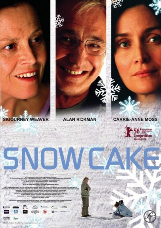
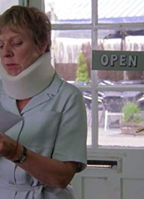
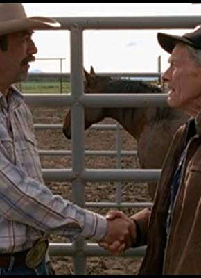
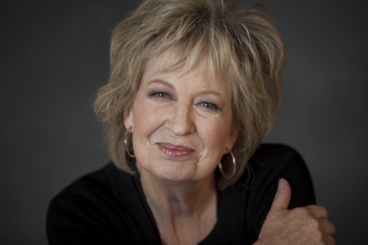

#11082 Der Geschmack von Schnee
Alternativ: Snow Cake (Originaltitel)
 
 IMDB-Wertung: 7.5 / 10
IMDB-Wertung: 7.5 / 10  Metascore: 54
Metascore: 54 
Der verschlossene Engländer Alex wird in der verschneiten Weite Ontarios in einen Autounfall verwickelt, gerade als die Anhalterin Vivienne bei ihm eingestiegen ist. Die junge Frau stirbt noch am Unfallort. Voller Schuldgefühle sucht der 50-jährige Alex Viviennes Mutter auf. Doch Linda ist keine gewöhnliche Mom: Sie ist Autistin und kann ihre Trauer nicht zeigen. Alex beschließt, ein paar Tage bei Linda zu bleiben, bis deren Eltern zur Beerdigung eintreffen. Immer mehr nimmt er an ihrem Leben teil und beginnt zudem eine Affäre mit der schönen Nachbarin Maggie, die alle Gefühle routiniert auf Distanz hält. Doch langsam beginnen sich die Charaktere zu verwandeln, und als der Schnee schmilzt, ist das Leben für keinen der drei mehr so, wie es war.
Jahr: 2006
Dauer: 107 Minuten
FSK: 6
Land: Kanada Studio: Kinowelt Home EntertainmentTonspuren: DD2.0 - ,
Untertitel:
Auflösung: 1080p (1920x1040) Größe: 8663 MB
Genre: Drama, Liebe
Regisseur: Marc Evans
Drehbuch: Angela Pell
Soundtrack: Broken Social Scene
Darsteller:
 Alan Rickman als Alex Hughes
Alan Rickman als Alex Hughes- Emily Hampshire als Vivienne Freeman
 Callum Keith Rennie als John Neil
Callum Keith Rennie als John Neil- James Allodi als Clyde
 Carrie-Anne Moss als Maggie
Carrie-Anne Moss als Maggie- Julie Stewart als Florence
 Sigourney Weaver als Linda Freeman
Sigourney Weaver als Linda Freeman-  Selina Cadell als Diane Wooton
 Dov Tiefenbach als Jack the Optician
Dov Tiefenbach als Jack the Optician-  David Fox als Dirk Freeman
-  Jayne Eastwood als Ellen Freeman
- Jackie Laidlaw als Louise
- Mark McKinney als Neighbour (uncredited)
- Jackie Brown als Waitress
- Scott Wickware als Senior Cop
- Johnny Goltz als Rookie Cop
- Janet van de Graaf als Meryl
- Charlie als Marilyn the Dog
- Nia Roberts als Janet the Vet
- John Bayliss als Priest
- Susan Coyne als Deborah the Neighbour
- Robert Smith Jones als Dick the Neighbour
- Samantha Hayes als Mourner (uncredited)
Datei: X:\2006(G-M)\Geschmack von Schnee, Der (2006, FSK6, 1920x1040).mkv seit 24.04.2019
Festplatte: HD 2005(G-Z)-2006(A-Z)
 Es gibt insgesamt 48 Filme in der Gruppe '2006(G-M)'
Es gibt insgesamt 48 Filme in der Gruppe '2006(G-M)'